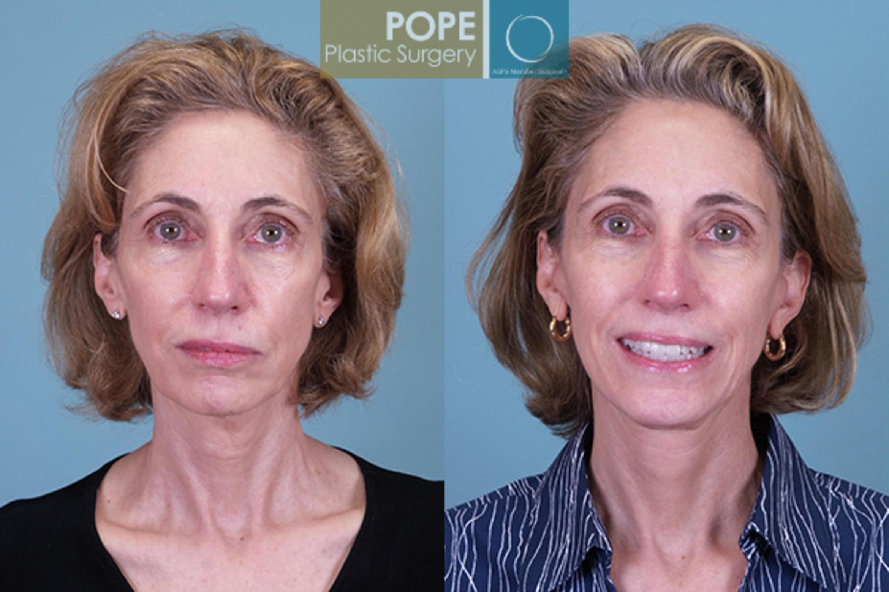

Restoration is one of the more subjective elements of plastic surgery. Essentially, this field tries to focus more on restoring the natural beauty of us humans prior to the deeds of trauma. This can be displayed through the disfiguration of soldiers in wars or even a slight burn you may have got from pouring hot water. Regardless, the vast majority of the procedures in this field tend to focus on restoration. Even the use of cosmetics can be thought of as restoration; as such items can restore mental strength and confidence in people. Restoration can come in various forms, some may include; the finding of true identity, the new sense of freedom and the restoration or even the creation of newfound confidence!
Reconstruction is a word we're all heard many times before, but have has anyone stopped and thought about the true meaning? In plastic surgery, a large portion of the surgeries is, of course, dealing with trauma. When something in the body is lost, either physically or mentally, we can always try to reconstruct it. Building back lost parts in the body is one of the major components of plastic surgery. For example, prosthetics can be considered to be a part of plastic surgery. Reconstructing a limb or even an organ can be absolutely revolutionary if done correctly. Throughout the progression of this field, surgeons have cooperated with bio-engineers to create prosthetics, improving the quality of life for countless people around the globe.
After a successful surgery in any medical field, there is always recovery. However, patients are the only people who partake in recovery, rather than every living thing in the world. Even plants are faced with challenges such as forest fires and pollution. You may wonder where I may be taking all this. Well, plastic surgery allows people to understand and improve themselves as they wish. Be it from trauma or insecurities, plastic surgery can assist people in their recovery from what life has to offer. Recoveries are present all the time when talking about plastic surgery. For example, if someone is involved in a large fire burning themselves severely, the physical obstacles are only a portion of the issue. The mental recovery, including confidence and courage, can be found with the help of this miraculous field
